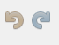
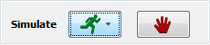
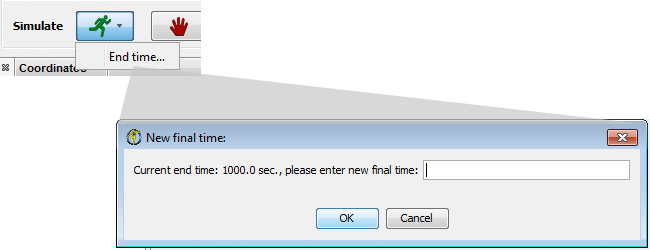
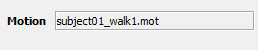
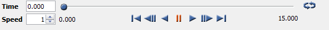

The information about the OpenSim toolbar covered in this section includes:
The toolbar is located at the top of the GUI and contains the model drop down menu, the motion textbox, the motion slider, and the video controls. There are also redo/undo buttons for enabling and disabling forces and constraints.
Redo/Undo buttons have been provided in the toolbar to make it easier to perform model editing. The history of edit actions is recorded.
|  | You can move backwards through this history (reverse the actions) by clicking the undo button (the left-pointing arrow) multiple times. To move forward through the history and reinstate actions, click the redo button (the right-pointing arrow).
|
|---|
As of OpenSim 3.1, the toolbar includes short cut buttons to run a forward simulation.
  | - Use the green run button to start a forward simulation for the current model in the GUI. The simulation will start from the current pose (see Coordinate Controls and Poses), after equilibrating the model.
- The simulation will continue until you hit red stop button or until it reaches the end time (default end time = 1000s). You can find the current simulation time in the bottom right corner progress bar. The simulation may run faster or slower than real time, depending on the complexity of your model.
- When the simulation stops, your results will be loaded in the GUI, so you can playback using the Motion Slider Controls described below.
- Find the motion in the Navigator panel to change its name (Right Click -> Rename...) or save (Right Click -> Save As...)
Read more about forward simulations in the chapter on Forward Dynamics. |
|---|
Motion Textbox
The motion textbox provides the name of the motion currently associated with a model.

The motion slider and video controls are used for the animation of the model:
|  | To animate the model use the video control buttons (e.g., play, pause, and loop). The motion slider corresponds to the current time point in the motion file, which describes how the model moves.
 | The value in the Speed textbox can be adjusted to change the playback speed of the animation |
|
|---|
{kind=link}
{kind=link}
{kind=link}
{kind=link}
{kind=link}
{kind=link}